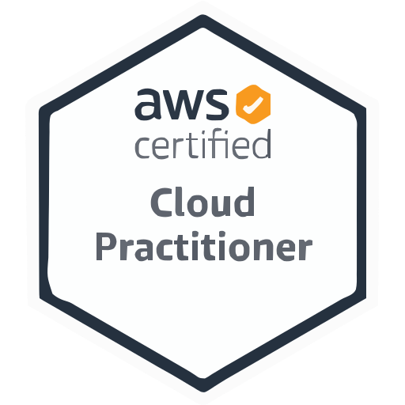
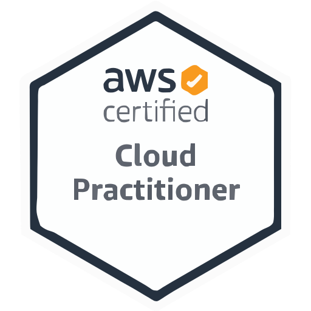

Afdhal Abdel Qadir
Hey there! I'm a certified cPanel professional with 2 years of experince in System adminstration and technical support .
I juggle with Linux and Windows systems for deploying customer websites and apps. AWS? You bet, I've wrangled that too.
Plus, I've got a knack for helping up IT infrastructures for small businesses , be it hosting websites and emails, in linux and windows servers.
In my free time, I dabble with my own server I built from my old Asus laptop and self host stuff within it . From home automations and media
servers to web servers and maintaining my own data infrastructure for my dad's restaurant business allowing him to store all the data in the cloud than his Pen drive.
By doing this I was able to understand how are linux servers built to serve wesbites. Which gave me the confidence to start freelancing and host my client's websites.
But ofcourse, since it is one of my client, I cannot give it any downtime, by hosting it on my Laptop server, so started maintaining them in a VPS server.
As time went on, I realized big companies don't always necessarily depend on these VPS servers and all the big comapnies are now shifting to pay as you go model for their servers to
handle all their Big data. Cloud platforms offer virtually unlimited scalability, allowing companies to quickly provision and scale resources to meet changing business needs.
This flexibility enables companies to adapt to fluctuations in demand without having to invest in additional hardware.These services include machine learning,
big data analytics, IoT, and serverless computing, allowing companies to focus on building and deploying applications rather than managing infrastructure.
Making shifting to cloud models like AWS and Azure enables companies to reduce costs, improve agility, and drive innovation, making them more competitive in today's digital economy.
So now, I'm eyeing a switch to DevOps.
After speaking to seniors at Devops and asking them for their genuine advise, my current objectives include completing my RHCSA certification and change my reading habit of fiction
to switching up these books called as "The Phoenix Project" and "The DevOps handbook" . So far in this book, I am understanding how there are different level of engineers trying their
best to keep our favorite apps like Instgram and Reddit runnung 24/7
Oh, and did I mention I just launched my resume site on AWS implementing CI/CD by doing the devops
beginner challenge The cloud resume challenge. Let's connect and swap stories about tech adventures!
Visits:
 
